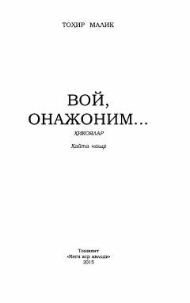

VOTohir Malik qalamiga mansub ta'sirli hikoyalar to'plami.
Ushbu kitob O'zbekiston xalq yozuvchisi Tohir Malikning turli mavzulardagi hikoyalarini o'z ichiga oladi. Asarlar insoniy munosabatlar, oilaviy qadriyatlar va hayotiy sinovlar haqida chuqur mushohada yuritishga undaydi.